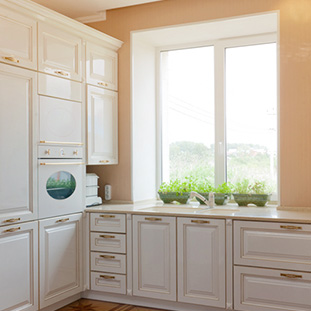
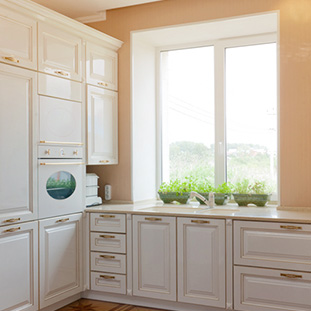
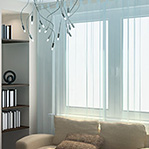
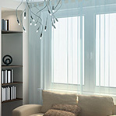

Преимущества наших окон
Больше тепла
Стеклопакет с газом аргон и трёхкамерный профиль делают окна невероятно тёплыми, способными выдержать испытания любыми холодами.
Меньше шума
Даже если окна квартиры выходят на проезжую часть, с нашими окнами Вы можете быть уверены в тишине и спокойствии в Вашей квартире.
Больше света
Благодаря использованию более узкой рамы профиля и полупросветленного стекла наши окна проспускают больше света, чем обычные.
 



 



Гарантия на окна и монтаж
На все устанавливаемые окна действует гарантия от 2 до 5 лет (в зависимости от выбранного профиля) и 3 года на монтаж выполненный нашими специалистами с учетом всех требований ГОСТ. К каждому пластиковому окну или двери прилагается паспорт качества дающий право на бесплатное устранение всех неполадок в работе окон в период действия гарантии. Гарантийный срок начинается с момента получения окон.
Сервисное обслуживание
При обращении в сервисную службу, наши специалисты в кратчайшие сроки приедут на место установки окон, выявят неисправность и устранят её с сохранением дальнейшей гарантии и соблюдая все требования качества. Даже если ваш гарантийный срок уже закончился, наша сервисная служба будета рада помочь вам с обслуживанием и продлить идеальную работу установленных окон.
Сертификаты соответствия
{kind=link}
{kind=link}
{kind=link}
{kind=link}
{kind=link}
Сфера использования наших окон
Качественный, но недорогой профиль используемый при производстве окон широко применяется в системах остекления стандартных размеров и конфигураций для жилых, коммерческих и промышленных объектов типовой застройки. Из этого профиля не производят оконные системы сложных форм, зато процесс изготовления стандартных окон для типовых зданий удалось сделать мало затратным, что положительно сказалось на стоимости конечного продукта.
Конструктивные особенности профиля
Профиль представлен на специализированном рынке только в белом исполнении с черным уплотнением по всему периметру. Высокую прочность конструкции обеспечивает дополнительное стальное армирование, благодаря чему профиль хорошо подходит для изготовления конструкций с поворотными, откидными и поворотно-откидными створками. Возможно производство штульповых окон – систем, не имеющих перекладину между створками.
Комплектация и характеристики изготавливаемых окон
Профиль может комплектоваться любой из современных систем фурнитуры. Для изделий из нашего профиля подходят любые стеклопакеты шириной до 32 мм. Высококачественный пластик имеет ровную гладкую поверхность, он устойчив к агрессивным внешним воздействиям, долго сохраняет первоначальную привлекательность и не требует специального ухода в течение всего эксплуатационного срока.


Заказать окна у нас - хорошая идея!